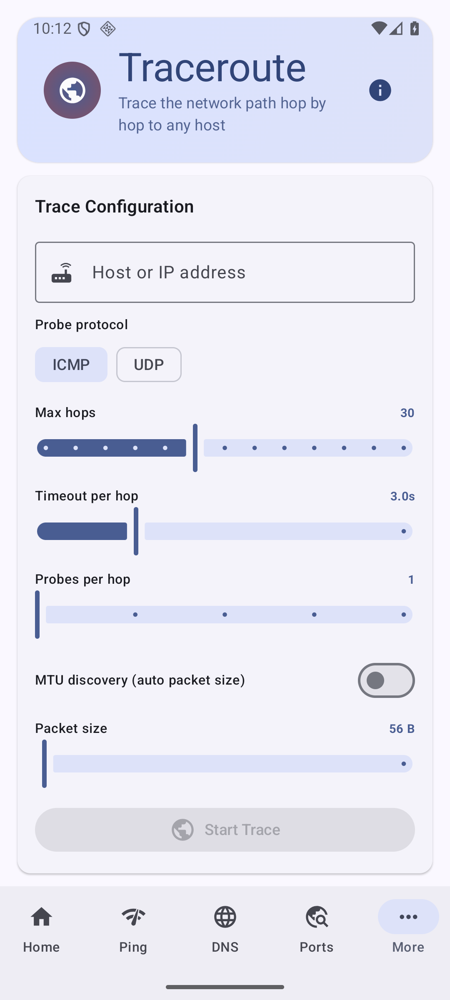
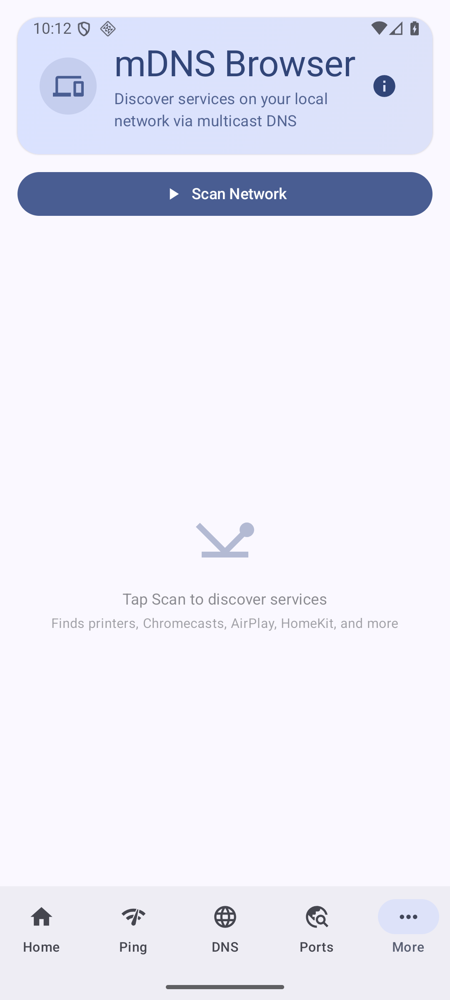

Net Swiss Knife
Your all-in-one Android networking toolkit

Traceroute.
Every hop, mapped.
Every hop, mapped.

Port Scanner.
Up to 500 ports at once.
Up to 500 ports at once.

DNS Lookup.
Ten record types.
Ten record types.

Wi-Fi Scanner.
Live spectrum analysis.
Live spectrum analysis.

TLS Inspector.
The full certificate chain.
The full certificate chain.

mDNS Browser.
Printers, casts, and more.
Printers, casts, and more.

WHOIS Lookup.
Domain, IP, and ASN.
Domain, IP, and ASN.

Binary, decoded.
The full subnet breakdown, instantly.
The full subnet breakdown, instantly.

Real diagnostics,
quietly delivered.
quietly delivered.
Net Swiss Knife
No accounts. No ads. Just tools.